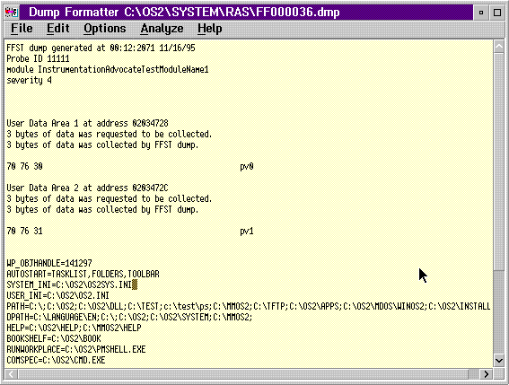

When you open the dump and there is at least one area of user data in the dump, the User Data option is available from the Analyze pull-down menu. You will not be able to select this option if the FFST dump contains no user data.
When you select this option, the PM Dump Facility dump formatter reads the
data and displays the data areas one by one. The system displays the data
with a label for each data area; for example, Data Area xxx (xxx
is from 1 to 30).
User Data in PM Dump Facility Dump Formatter Window
